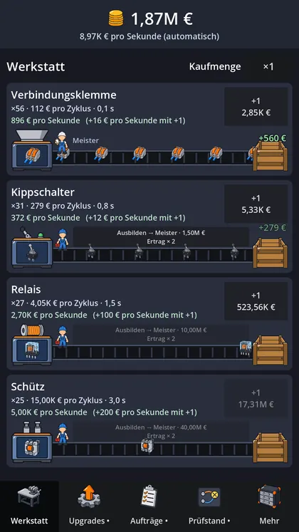
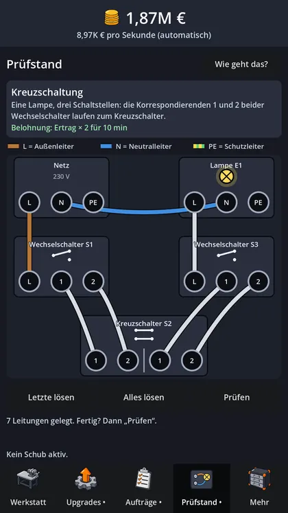
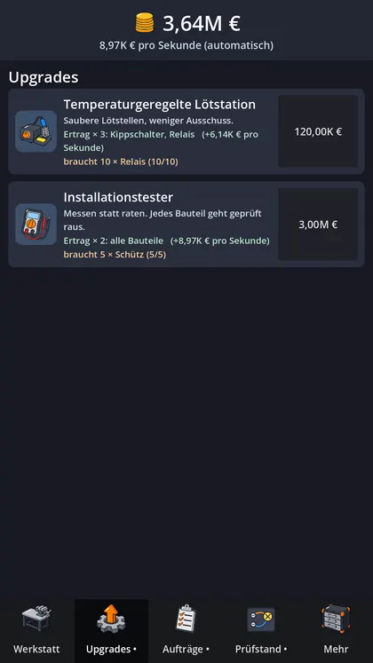

← Alle Projekte

Interner Test · Android
Volt Works
Du startest mit einer einzigen Verbindungsklemme in der Garage. Die Bauteile gibt es wirklich, und am Prüfstand verdrahtest du Schaltungen, wie sie in jedem Haus stecken.
Für Android im Hochformat, mit einem Daumen spielbar, iOS und Steam später. Kostenlos, enthält Werbung, eine Dauer-Lizenz entfernt sie.
Fortschritt · Version 0.4.0 · Stand November 2026
So weit ist es
- FertigGrundspiel
- Gerade dranTest auf dem Handy
- Kommt nochVersion 0.5.0
- Kommt nochTest mit Spielern
- Kommt nochGoogle Play
Schon im Spiel
- Fünf Ären: Garage, Steuerungsbau, Automatisierung, Rechenzentrum, Quantenlabor
- Fertigungslinien mit Maschine, Band und Versand
- Techniker, die du zu Gesellen und Meistern ausbildest
- Offline-Ertrag, wenn automatisiert ist
- Prüfstand mit zwölf Schaltungen, von der Steckdose bis zur Kreuzschaltung
- Aufträge von der Pinnwand, Bonus- und Tagesaufträge
- Aufstieg in die nächste Runde
Als Nächstes
- In Arbeit für 0.5.0: Patente-Baum, Werkbank mit drei Minispielen, tägliche Belohnung, 19 Erfolge
- Bilder für die späten Ären
- Testkauf und Einwilligung prüfen
- Test mit Spielern für Google Play
Bilder
Aus dem Spiel



Die Bilder zeigen einen älteren Stand.